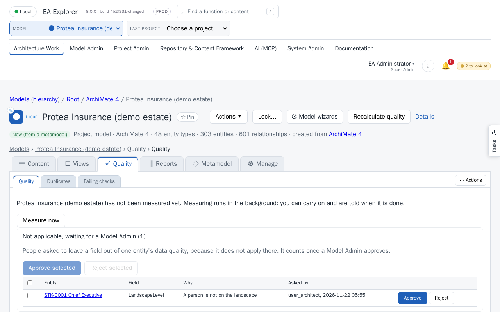

Add a data quality rule
For: Model Admin
A rule for the model's data, no SQL needed.

#/metamodel/{m}/qualityWhy do this
A quality rule states what good data looks like for one type: an owner is required, a retirement date comes after the go-live date. Errors stop a commit until fixed; warnings let it through but count against the score. Rules turn the Model Admin's expectations into checks that run for everyone. See Data quality: why it matters and how it is measured.
Quality is not a one-off clean-up but a habit: rules catch problems as they are saved, the score shows the trend, and owners fix what is theirs. A model people trust is one they keep using.
In TOGAF terms: Supports every ADM phase: the content framework is only useful if its building blocks are complete and correct. See EA Explorer and the TOGAF Standard.
The goal: Bad values are caught as they are saved, not months later.
Before you start You need the Model Admin role on the model.
Steps
- Open the model's Quality.
- New quality rule: pick the kind, the type and the condition.
- Choose error (blocks commits) or warning; Save.